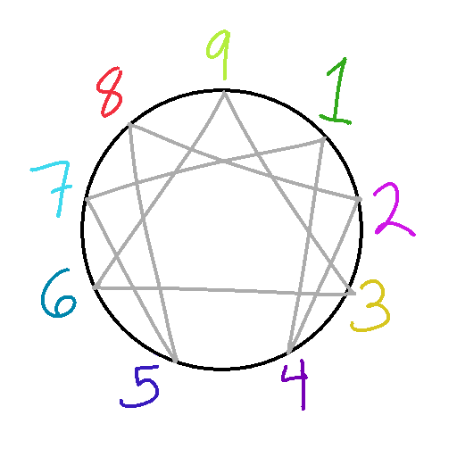

Author: Loopislost
Published: Sept. 26th, 2026
If you know me pretty well, you know that I know way too much about "personality theory". If you know me even better, you might be aware that my first introduction to the "real" internet (beyond watching PythonMC's LetsPlay on Youtube) was through the forum on the website 16personalities.com when I was 12 years old. The forums seem to have been eradicated last I checked, definitely for the best. They were a massive shitshow and a PR disaster waiting to happen.
The forum had several funny quirks: you couldn't mention any other forms of typology on there (the word "Jung" was famously banned, and users would often jokingly would censor the word j*ngle). (Any sort of moderation on homophobia, transphobia, sexism, or racism? Whew... we don't talk about that!). But other than the "civil political discussions", the creeps trying to pickup younger kids, it was a place where people who were genuinely passionate about personality theory could connect. And to my sheltered seventh-grade shelf, the diverse group of people on there helped challenge the conservative values my parents raised me with. When quarantine hit, it was the perfect shelter for a bunch of misunderstood teenagers.
I always wanted to understand other people. Perhaps more than that, I wanted to understand myself. I wanted to understand why I felt different, what was wrong with me. Most kids feel that way (at least, based on many of the friends I've talked to). For me, personality theory claims to fill that gap in understanding. Suddenly you have an equation that you can shove people into. And people become solvable. You have reasons for everything and it all makes sense... until you see all the little holes. 16P is a funny case because they are, above all, a business trying to sell you yourself. Their claim that they know you is incredibly appealing to a lost preteen. 16P is especially insidious, because it poses itself as a central authority (unlike most other theories that are pockets of differing opinions scattered across the internet). MBTI is kind of stupid.
Where did 16P actually get its theory? It's a strange cocktail of "The Big Five" and (you guessed it!) Carl Jung's personality types (also called Myers Briggs? idk I'm not very clear on that(please do more research I didn't mean for this article to stray from my personal experience so much)) Here, have a quote:
As a psychometric indicator, the test exhibits significant deficiencies, including poor validity, poor reliability, measuring supposedly dichotomous categories that are not independent, and not being comprehensive.[11][12][13][14] Most of the research supporting the MBTI's validity has been produced by the Center for Applications of Psychological Type, an organization run by the Myers-Briggs Foundation, and published in the center's own journal, the Journal of Psychological Type (JPT), raising questions of independence, bias and conflict of interest.[15] Nevertheless, due to the Barnum effect, participants often attribute a level of accuracy to the results that is disproportionate to their scientific credibility.[16]
--Wikipedia (I'm sorry I'm lazy)
Thank you, Wikipedia, for that wonderfully concise explanation. I wish I saw that one before I dove headfirst into that rabbit hole. (I'm just like Victor Frankenstein frfr)
After about a year I finally branched out into other theories and realized how narrow 16P/MBTI was. I dabbled a little more in the expanded 16P of Jungian "Cognitive Functions" (Big Five is, to be frank, not that interesting to me. It doesn't make nearly as many crazy claims, and is actually scientifically verifiable. Go read more about it if you're curious). Cognitive functions are slightly more interesting to me, but difficult to wrap your brain around and I grew tired of them and started questioning what the point of them was anyhow (but I can still tell you all the function stacks if you give me any 4 letter combo!). Anyway, there are SO MANY flavors of personality pseudoscience out there. On to my personal favorite: The Enneagram!
Oh Enneagram, my beloved. This one's stuck with me for years. It's also a huge minefield trying to get past all the "pop psychology" and getting into the real meat of the theory. (It's also not super scientifically verifiable! If I've learned anything, it's that you shouldn't treat any personality theory as gospel. That won't stop me from investing far too much time into obsessing over it though...) (nono this one is Way Better than the other ones! Trust me! I would Never be wrong!)
This here is the part where I go a bit off the rails and contradict everything I've been saying. You have been warned about some of the pitfalls (I will state, yet again, do not take this stuff super seriously!). I will now stop warning you and start ranting because I care way too much about it and it has had a stranglehold on my brain for years.

"All models are wrong, but some are useful."--Hartwell the Watcher
Still here? Hi! Welcome. To preface: there are much better resources about the enneagram out there than myself. There are also much worse resources. Here is a good starter video (that I will likely be discussing points from):
"Fixing the Enneagram" by Hartwell The Watcher
Tests. You can take them. DO NOT trust them. There is no test out there that can cleanly categorize you. I have taken many, many personality tests. I have forced my friends to take many personality tests. They can give you helpful pointers for where to start looking, but they don't know you.
Categorization. The real enneagram is meant to categorize human problems, not necessarily humans in their entirety. The outward presentation of an individual can clue you in to their type, but the Enneagram is more so about the fears or insecurities that drive our actions.
Fluff. The enneagram comes with tons of funny little bells and whistles and ornaments. They can be pretty and knowing all about them might make you feel like you understand the theory better, but most of it is thoroughly unnecessary. Type integration/disintegration or wings are pretty good examples. Maybe also throw countertypes in there? Not sure. However, some extra ornamentations actually are pretty helpful, like tritypes or instinctual variants. Speaking of which...
Everyone's WRONG about Instinctual Variants. This is a HUGE pet peeve of mine. I would recommend this article for a deeper dive. But in case you don't want to read it, my main issue with the way people treat instincts is that they conflate traits of the social instinct with the sexual instinct and it really mucks the whole thing up. Frequently social is taken to mean "cares primarily about their social status and their position within the group/hierarchy" while sexual means "likes one on one connection and is suuuuper deep". The domain of the social instinct DOES include the whole status/hierarchy thing, but upon seeing that it makes the social subtype appear incredibly shallow. The social instinct IS the one-to-one instinct. All the instincts are derived from aspects of humanity that are fundamental to the survival of our species (self preservation is obvious, social = social bonds between people, sexual = reproductive drive). So... where does that leave the sexual instinct exactly? If they aren't the suuuuper deep people just looking for those suuuuper deep connections then what is it?
I am deeply sorry to break the news. The sexual instinct has to do with SEX. And---(this is where it gets confusing)--that doesn't mean a sexual type just wants to have sex all the time! I'm terrible at explaining, but the sexual domain includes things like chemistry, attraction, and the kind of spark/excitement that I believe people mistake for the one-to-one thing. Though just wanting to fulfill physical needs is more of a self preservation thing (probably, don't take my word for it).
For more info about the actual theory, there's tons of resources online. The Hartwell series I linked earlier is pretty good for his overall views on the Enneagram and certain types but I remember finding a couple of the specific type videos less helpful than others. I agree with his overall idea of how the Enneagram should work though and if you're into writing they're worth a watch. For more knowledge on specific types, avoid the Enneagram Institute or any site that gives vague and overall positive descriptions.
Typology Central: I haven't actually looked much into this one yet, so I am tentative about it. Shows promise though?
Personality Database's Enneagram Wiki: This one has a LOT of information from all kinds of enneagram authors. It can be hard to sift through to find the information you actually want and it's muddy and confusing. It doesn't come across like its selling you something or locking you into it so I appreciate that.
A note on Personality Database: I like to browse it sometimes but so many (if not most) of the typing consensuses on there are just wrong. Also too much focus on cognitive functions and not enough on Enneagram for my taste.
I am a type 9. I'm also a social dominant, with sexual as my second instinct (Not as confident on that one). The other 2 types in my tritype are 2 and 7. (I would also be a wing 1, but wings are stupid). Written out, that looks like:
so/sx 9w1 927
It took me quite a while to arrive here. I originally thought I was a four, which is a fun and ridiculously wrong mistype. And then I had a brief five phase before I had to accept being a 9. It's pretty easy to mislead and convince yourself that you're something different from what you actually are. It's easier to believe that your core struggle is something stupid that you don't actually struggle with. When I finally realized 9 was my actual type it was like... oh... it was that obvious all along wasn't it. I wanted to believe that my main issue was that I was too closed off, not something stupid like too passive or not knowing how to assert my own needs (let alone recognize them).
I was initially put off from even looking at type Nine because they seemed so nice and generic. And I didn't want to be boring. Type Nine is supposedly the most common type (and I believe that!) -- making up somewhere between 15%-20% of the population. But being a common type doesn't really take away any of your individuality; it feels disappointing to realize you're "just like everyone else" but you aren't. You are full person outside of that. My type mainly ascribes patterns to some of the issues I've had throughout my life and identifies areas that I could work harder in to overcome my issues (standing up for myself, not allowing myself to just go with the flow even when it hurts me).
Figuring out my instincts was a lot easier. I enjoy instincts because they can exist entirely on their own without the rest of the theory and still make plenty of sense, but they still follow the same ideas of it (You are too fixated on your dominant one, you need to learn to achieve balance). I'm social dominant through and through, so much of what I care about revolves around other people and my relation to them. I suffer when I feel disconnected from others, I spend way too much time thinking about what they're thinking and figuring out how to adapt myself to mesh with them better. I'm not as confident on sexual second. I just think I'm particularly weak in self-preservation and especially out of tune with my physical needs. I know people who are very sensitive to feeling overloaded or having others place too many demands on them and I am awful at detecting that for myself.
Some people are just much easier for me to type to than others. I was very hard for myself to type, but someone else who knew a lot about the enneagram might have had a pretty easy time with me. It takes time and self reflection, and often your brain will try to deflect you from seeing your core issues.
Where to start: Look at the 3 triads. Heart, Head, Gut. Heart types are most concerned with/driven by their image, head types deal in fear, and Gut types are centered most in the body and relate to anger. Stereotypically heart triads will be more connected to their emotions, head types to their head, and idk about gut types. I wouldn't rely on that though. For type 7, 3, and 9 it might be harder to identify your triad because the type fixation of those three is built around hiding/rejecting the core of the triad.
Ok, there's a lot more I could say but in all honesty I am getting a bit bored of this. Thank you for your time and letting me ramble.